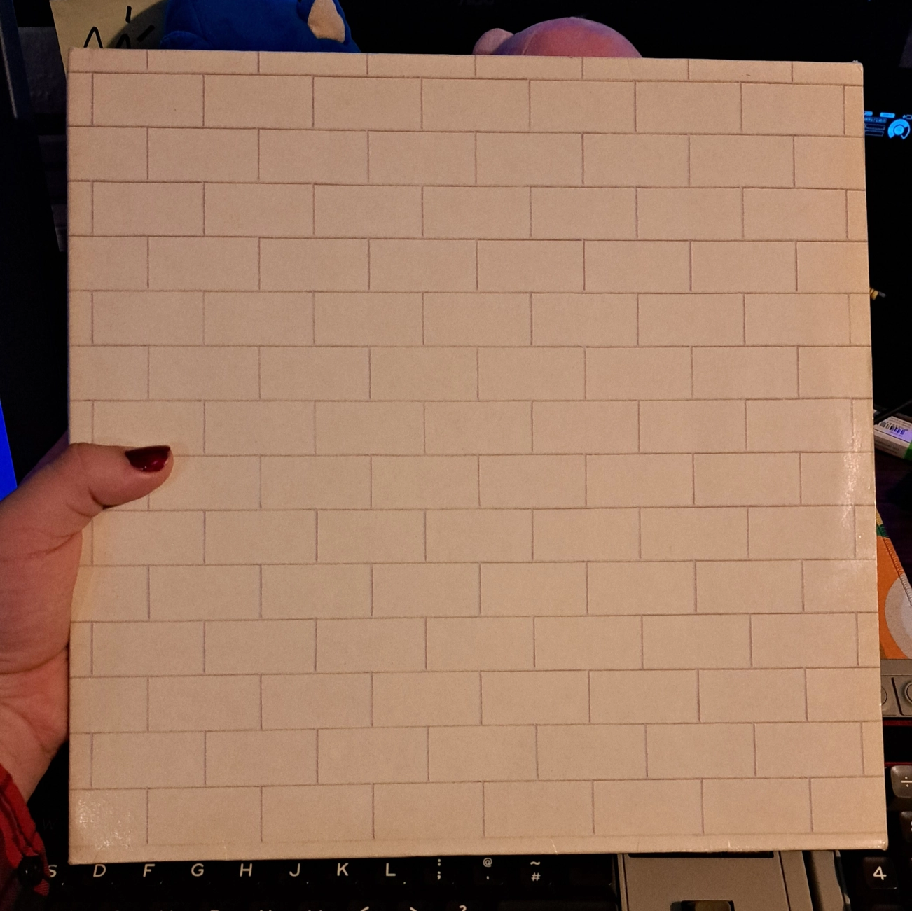
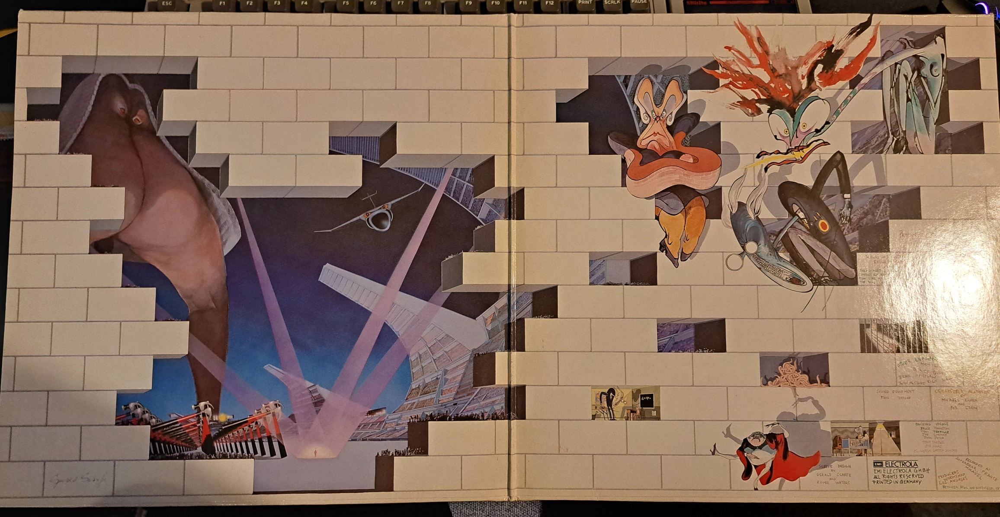
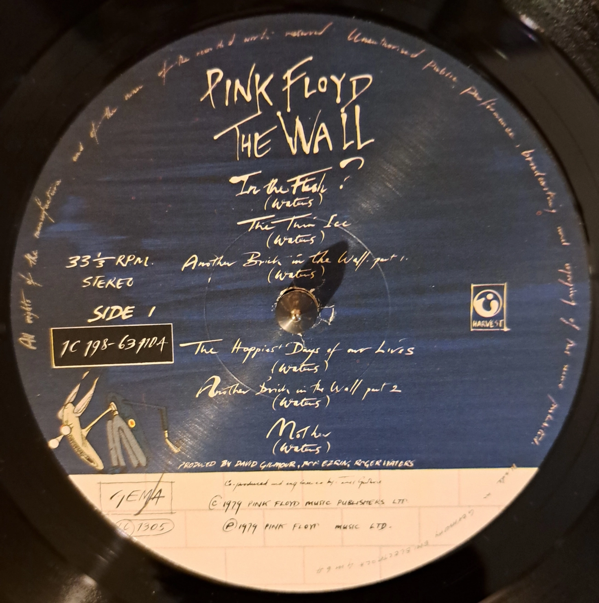
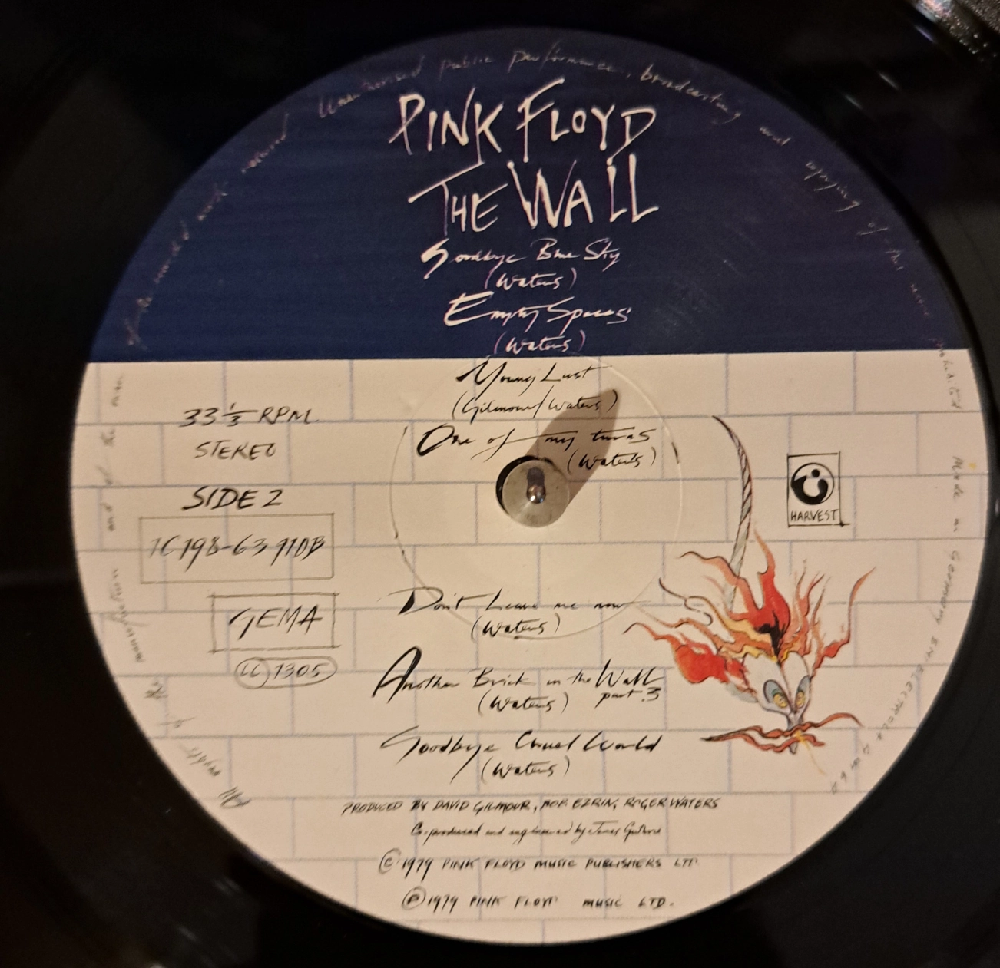
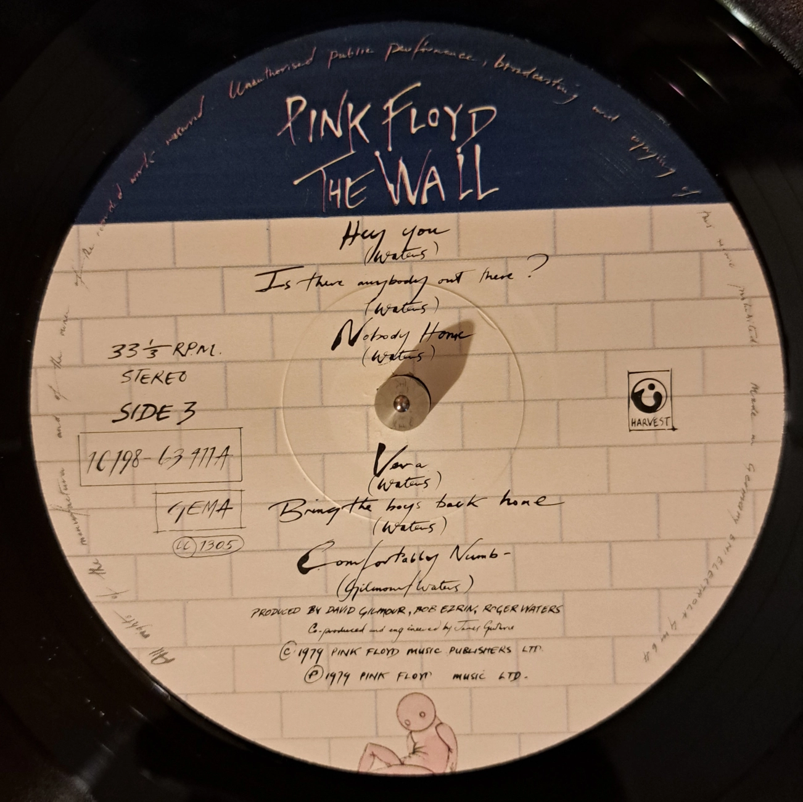
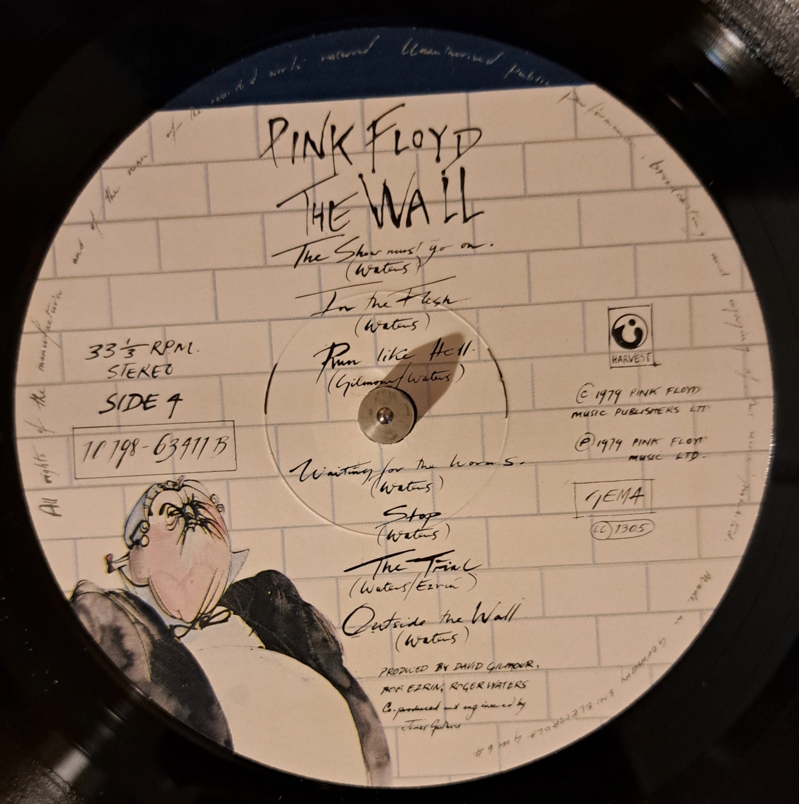

The Wall
Pink Floyd
Produced by: Bob Ezrin, David Gilmour, James Guthrie and Roger Waters
Released on: 30 November 1979


Cover art depicting a white brick wall.
The Cover itself doesn't actually feature the album's title.
Instead, copies of The Wall actually used to come with a sticker with the album's title on it, just like how the album cover appears on streaming services nowerdays.

The absolutely wild Inner Sleeve art by Gerald Scarfe depicting The Trial from Side 4 of the Album !
The Wall
Pink Floyd
Produced by: Bob Ezrin, David Gilmour, James Guthrie and Roger Waters
Released on: 30 November 1979
LP 1, Side 1
1.
In the Flesh?
03:19
2.
The Thin Ice
02:27
3.
Another Brick in the Wall (Part 1)
03:13
4.
The Happiest Days of our Lives
01:51
5.
Another Brick in the Wall (Part 2)
03:13
6.
Mother
05:35
LP 1, Side 2
7.
Goodbye Blue Sky
02:48
8.
Empty Spaces
02:08
9.
Young Lust
03:30
10.
One of my Turns
03:37
11.
Don't Leave me now
04:16
12.
Another Brick in the Wall (Part 3)
01:15
13.
Goodbye Cruel World
01:14
LP 2, Side 3
14.
Hey You
04:39
15.
Is there Anybody Out There?
02:42
16.
Nobody Home
03:24
17.
Vera
01:34
18.
Bring the Boys Back Home
01:28
19.
Comfortably Numb
06:23
LP 2, Side 4
20.
The Show Must Go On
01:37
21.
In the Flesh
04:16
22.
Run Like Hell
04:24
23.
Waiting for the Worms
03:58
24.
Stop
00:31
25.
The Trial
05:19
26.
Outside the Wall
01:45
The Wall was Pink Floyd's 11th studio album, which was first released in November 1979 and is considered by many one of Pink Floyd's best albums and one of the most influential rock albums of recent history. And i'd totaly agree !
Even if you've never heard of this album before, you've definitely heard some of the songs that come from this album, like Another Brick in the Wall or Comfortably Numb, on the radio before !
While reception of The Wall was fairly mixed upon it's release in 1979, it quickly grew a cult folowing and is still to this day the best selling double album of all time !
Like other albums in Pink Floyd's Dicography, The Wall is a concept album, meaning that the songs on this album are all connected with eachother and that they follow a set storyline.
The story is about a rock star named Pink, who acts as a sort of autobiography of both Roger Waters and former Pink Floyd member Syd Barret. During the album, we witness Pink growing up in Post-world war 2 Britain, together with his overprotective mother. His father died in the war and in school Pink was constantly abused by his strict teachers.
All of these events lead to Pink building a metaphorical Wall around himself throughout his life. Once Pink finds out that his marrige is over, while on Tour with his band in the U.S., he completes his Wall and isolates himself from the outside world in his hotel room.




The further you progress in the album, the higher Pink's metaphorical wall grows...
The Wall is about trauma and isolation and about learning, to face your inner demons and that isolating yourself from the outer world isn't just harming yourself, but also the people around you.
This album holds a special place in my heart ! My Mom was actually the one who introduced me to The Wall and Pink Floyd as a whole at a relatively young age ! We used to listen to Another Brick in The Wall pretty often on her car's stereo. This song has been stuck in my head ever since !